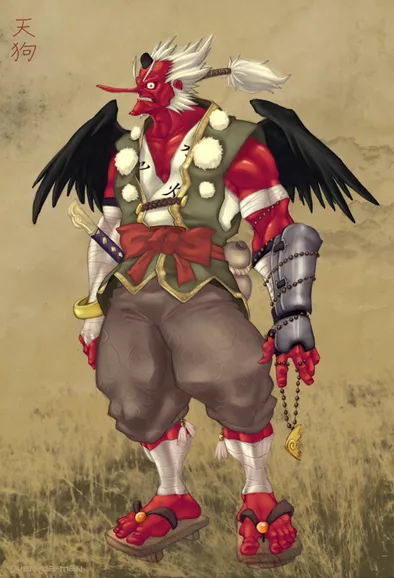

Коли країна була ще молодою, злий бог шторму Сусано но Мікото створив першого Тенгу з великої чорної ворони, який виконував його накази у царині смертних. Він наділив Тенгу владою керувати стихією, силою змінювати свій вигляд, владою над великими горами та лісами, а також здатністю рухатися по космосу в мить очей. Сусано но Мікото назвав своє творіння Соджобо і подарував йому два подарунки.
Перший подарунок являв собою віяло, виготовлене з пір’я фенікса, яке мало силу творити, а другий подарунок – меч, інструмент, який до цього призначався лише богам. Після цього Сусано но Мікото попрощався з його творінням і відправив його на землю. На землі Соджобо одного разу використав віяло, подароване йому його господарем, щоб створити 12 яєць. З кожного яйця вилупився новий Тенгу аж до останнього яйця, з якого вилупилося смішне двоголове чудовисько. Коли монстр почав дичати, Соджобо змушений був використати своє магічне віяло і розділити монстра на два різних Тенгу. Він назвав першого і найсильнішого- Окума (володарем великих демонів), а другого, меншого і слабкого, Оні (володар менших демонів) “. Так відбулося створення небесного пасатенгу. Як частина японської міфології, вони належать до надприродних істот або Іккай. У японській історії вони вперше з’являються у письмовій формі в Ніхоні Шокі 日本 書 紀, який був написаний у 720 році нашої ери